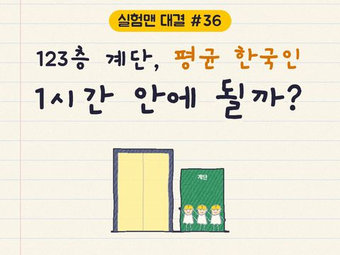
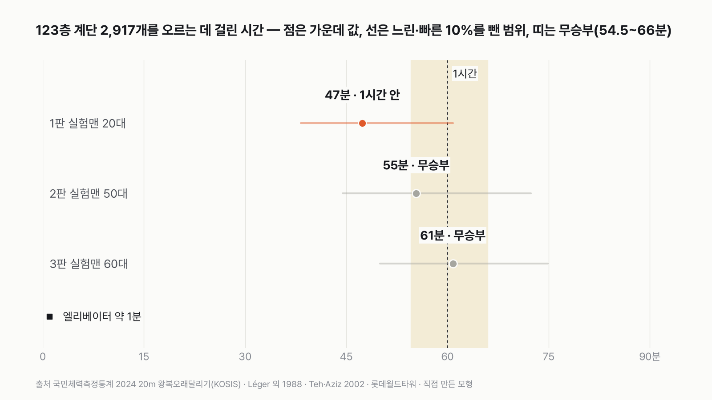
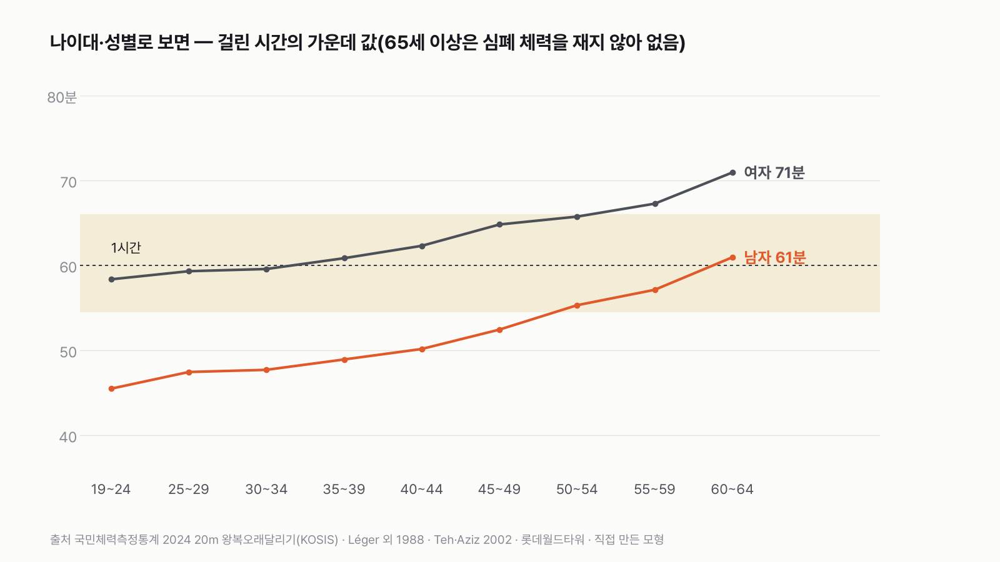
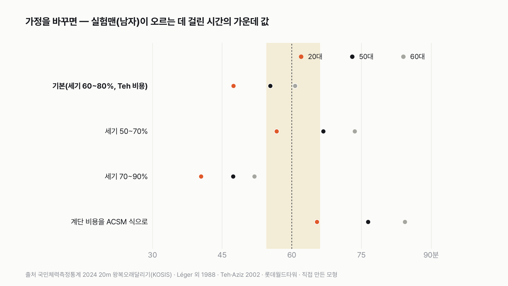

실험맨은 롯데월드타워 123층 계단을 1시간 안에 오를 수 있을까
대회에 나오는 사람은 연습하고 오는 사람들이에요. 특별히 운동하지 않은 평균 한국인이면 어떨지, 먼저 골라 주세요.

독자 투표
실험맨(평균 한국인)은 롯데월드타워 123층 계단을 1시간 안에 오를 수 있을까?
이 대결의 규칙 자세히 (자료·판정 기준)
3줄 요약
- 평균 한국인 대역 실험맨이 롯데월드타워 1층에서 123층까지 계단 2,917개를 걸어 올라요.
- 엘리베이터는 1분이면 가는 높이예요. 실험맨은 1시간 안에 닿을까요?
- 20대·50대·60대 실험맨이 차례로 올라가요. 투표하면 결과가 바로 아래에 열려요.
조건과 규칙
- 실험맨은 국민체력측정에서 잰 그 나이대 한국 남자의 평균 체력을 가진 사람이에요. 20대, 50대, 60대 세 판으로 올라가요.
- 계단은 대회 코스와 같아요. 1층에서 123층까지 2,917개, 올라가는 높이는 498m예요.
- 쉬어 가도 되고, 걷는 속도는 자기 체력에 맞춰요. 1시간이 걸린 시간의 1.1배를 넘으면 "1시간 안", 걸린 시간이 1시간의 1.1배를 넘으면 "1시간 넘게", 그 사이(54.5~66분)는 무승부예요.
결과 요약
3판 1승 2무 → 최종 1시간 안(박빙)
- 20대 실험맨은 47분이면 꼭대기에 닿아요. 엘리베이터(약 1분)의 47배예요.
- 50대는 55분, 60대는 61분이라 둘 다 1시간 언저리의 무승부예요.
- 같은 판을 여자 실험맨으로 돌리면 0승 2무 1패로 "1시간 넘게"예요. 남녀 반반이면 1승 2무로 "1시간 안"인데, 60대 판은 무승부 선에 0.4분 차로 붙어 있어요.
- 판정은 얇아요. 조금 더 느긋하게 오른다고 보면(버티는 세기를 5%포인트만 낮추면) 무승부, 더 느긋하면(체력의 50~70%) "1시간 넘게"로 뒤집혀요.
그래서? 계단 2,917개는 평균 20대 남자에게는 1시간 안의 일이지만, 50대부터는, 그리고 여자 실험맨에게는 딱 1시간을 두고 줄다리기를 해요.
독자 예상 vs 데이터 결과
실험맨(평균 한국인)은 롯데월드타워 123층 계단을 1시간 안에 오를 수 있을까?
데이터로 보면 1시간 안에 오른다. 남자 실험맨은 20대 47분으로 1시간 안, 50대(55분)·60대(61분)는 무승부예요. 여자 실험맨이거나 조금 더 느긋하게 오르면 판정이 뒤집혀요.
3줄 요약
- 평균 한국인 대역 실험맨이 롯데월드타워 1층에서 123층까지 계단 2,917개를 걸어 올라요.
- 엘리베이터는 1분이면 가는 높이예요. 실험맨은 1시간 안에 닿을까요?
- 20대·50대·60대 실험맨이 차례로 올라가요.


숫자 두 개로 줄이면 이래요. 엘리베이터는 1분, 20대 실험맨은 47분이에요. 그리고 60대 실험맨이 1시간 안에 오를 확률은 거의 반반(47%)이에요.
| 판 | 체력(20m 왕복달리기) | 걸린 시간 가운데 값 | 느린·빠른 10%를 뺀 범위 | 1시간 안 비율 | 판정 |
|---|---|---|---|---|---|
| 1판 실험맨 20대 | 42.7번 | 47분 | 38~61분 | 89% | 1시간 안 |
| 2판 실험맨 50대 | 28.1번 | 55분 | 44~72분 | 67% | 무승부 |
| 3판 실험맨 60대 | 21.0번 | 61분 | 50~75분 | 47% | 무승부 |
| 최종 | 3판 1승 2무 → 1시간 안(박빙) |
판마다 체력이 다른 실험맨을 2만 명씩 뽑아 계단을 오르게 했어요. 표의 시간은 그 가운데 딱 중간인 사람의 기록이에요. 이 규칙과 가정이면 최종 판정은 "1시간 안"이에요. 다만 이긴 판은 하나, 나머지 둘은 1시간 언저리라 박빙이에요. 버티는 세기를 5%포인트만 낮춰도 무승부가 될 만큼 얇은 판정이에요.
1판 실험맨 20대: 1시간 안(47분)
20대 후반 한국 남자는 국민체력측정의 20m 왕복오래달리기를 평균 42.7번 해요. 이 기록을 국제적으로 쓰는 계산식에 넣으면, 1분에 몸무게 1kg당 산소를 38.6mL까지 쓸 수 있는 심폐 체력이에요. 이 체력의 60~80%로 버티며 오르면 1분에 위로 10.5m 남짓 올라가요. 498m를 오르는 데 가운데 값으로 47분이에요.
엘리베이터는 같은 높이를 약 1분에 가요. 47배 차이예요. 20대 실험맨 10명 가운데 9명은 1시간 안에 꼭대기에 닿아요.
2판 실험맨 50대: 무승부(55분)
50대 초반 남자의 왕복오래달리기는 평균 28.1번이에요. 심폐 체력은 32.6으로 20대보다 15% 낮아요. 걸린 시간은 55분이라, "1시간 안" 기준(54.5분)에 1분도 안 되는 차이로 못 미쳐 무승부예요. 10명 중 7명은 1시간 안에 오르지만, 느린 쪽은 72분까지 걸려요.
3판 실험맨 60대: 무승부(61분)
60대 초반 남자의 왕복오래달리기는 평균 21.0번, 심폐 체력은 29.6이에요. 가운데 값은 61분으로 1시간을 살짝 넘겨요. 1시간 안에 오르는 사람은 47%, 거의 반반이에요. 저는 60대면 한참 넘길 줄 알았는데, 61분이라는 숫자를 보고 1시간이라는 선이 얼마나 아슬아슬한지 실감했어요.


여자 실험맨이라면: 1시간 넘게(0승 2무 1패)
같은 세 판을 여자 실험맨으로 돌리면 20대 59분, 50대 66분 직전으로 무승부, 60대는 71분으로 "1시간 넘게"예요. 0승 2무 1패라 최종은 "1시간 넘게"예요. 국민체력측정에서 같은 나이 여자의 왕복오래달리기 기록이 남자의 절반 정도라서 차이가 커요.
남녀를 반반 섞은 실험맨이면 20대 54분(1시간 안), 50대 61분, 60대 66분 직전으로 1승 2무, 최종은 "1시간 안"이에요. 다만 60대 판은 "1시간 넘게" 기준(66분)에 0.4분 차로 붙어 있어요. 19~24세부터 60~64세까지 남자 모든 나이대를 돌려 보면 45분에서 61분으로 천천히 늘어요. 65세 이상은 국민체력측정이 심폐 체력을 재지 않아서 계산할 수 없었어요.


가정을 바꾸면
판정을 가장 크게 흔드는 건 '얼마나 세게 버티느냐'예요. 이 글은 1시간 안팎을 오르는 동안 심폐 체력의 60~80%를 쓴다고 봤어요. 조금 더 느긋하게, 55~75%로 오른다고 보면 20대 51분, 50대 60분, 60대 67분으로 1승 1무 1패, 최종은 무승부예요. 더 느긋하게 50~70%로 오르면 20대 57분(무승부), 50대 67분, 60대 74분으로 최종이 "1시간 넘게"로 뒤집혀요. 반대로 70~90%로 힘껏 오르면 세 판 모두 "1시간 안"이에요.
계단 비용을 운동 처방에 흔히 쓰는 계산식(ACSM)으로 바꾸면 20대도 65분으로 무승부, 50대·60대는 76분·84분이에요. 다만 이 계산식으로는 대회 우승 기록(16분 안팎)에 사람에게서 나오기 어려운 체력이 필요해서, 계단 180칸을 실제로 오른 103명을 잰 값을 기본으로 뒀어요.
실제 대회 기록과 맞춰 보면
롯데월드타워 스카이런은 해마다 2,000명 넘게 이 계단을 올라요. 아쉽게도 일반 참가자 전체의 기록 분포는 공개된 자료를 찾지 못했어요. 대신 보도로 알려진 기록은 이래요.
| 누가 | 기록 | 출처 |
|---|---|---|
| 엘리트 남자 우승(2019) | 15분 37초 | Vertical World Circuit 2019.4.6 |
| 엘리트 남자 우승(2026) | 16분 8초 | 뉴시스 2026.4.19 |
| 엘리트 여자 우승(2026) | 21분 19초 | 뉴시스 2026.4.19 |
| 경쟁 부문 남자 우승(2024, 35세) | 19분 27초 | 머니투데이 2024.4.21 |
| 경쟁 부문 여자 우승(2024, 28세) | 22분 59초 | 머니투데이 2024.4.21 |
| 경쟁 부문 참가자(2024, 29세 남자) | 30분 초반 | 머니투데이 2024.4.21 |
| 완주가 목표인 기자(2024, 비경쟁) | 59분 48초 | 머니투데이 2024.4.21 |
| 만성 운동부족 40대 기자(2024, 아이 둘과 함께) | 54분 | 뉴데일리 2024.4.22 |
이 대회에 나오는 사람은 일부러 신청해서 연습까지 하고 오는 사람들이라, 평균 한국인보다 체력이 좋아요. 그래서 이 표는 실제보다 빠른 쪽으로 기울어 있어요.
운동을 꾸준히 한 20대 참가자가 30분 초반, 완주만 목표로 한 기자가 1시간 남짓이었어요. 스스로 "만성 운동부족"이라는 40대 기자는 아이 둘과 쉬엄쉬엄 올라 54분에 닿았어요. 모형의 20대 실험맨(47분, 느린·빠른 10%를 뺀 범위 38~61분)과 50대 실험맨(55분)이 그 근처에 들어와요. 판정에는 쓰지 않은 맞춰 보기예요.
엘리베이터와는 몇 배
전망대 엘리베이터는 1분에 600m를 움직여, 지하 2층에서 121층까지 496m를 약 1분에 가요. 실험맨이 계단으로 오르면 20대 47배, 50대 55배, 60대 61배 오래 걸려요.
결국 남자 실험맨은 1시간 안에 123층에 닿아요. 20대는 넉넉히 닿고, 50·60대는 1시간 선에서 승부가 안 나요. 여자 실험맨이거나 조금만 더 느긋하게 오르면 "1시간 넘게"로 뒤집히는, 이름 그대로 박빙이에요.
이 숫자는 어디서 왔나요
출처
기준일 체력 자료는 2024년 국민체력측정통계(2026년 11월 9일 받음)예요. 조건은 2026년 11월 9일, 계산하기 전에 정했어요.
국민체육진흥공단국민체력측정통계
- 20m 왕복오래달리기 변화: 성인 남자·여자KOSIS DT_113_STBL_1020294
나이대별 평균·표준편차(2024)
국민체력100 관련 법령(국가법령정보센터)
- 체력검사 종목별 측정 방법 별표 2
왕복오래달리기 단계별 시간·횟수
Léger 외 1988,Journal of Sports Sciences
- 왕복오래달리기 체력 환산식doi:10.1080/02640418808729800원본 보기
마지막 단계 속도 → 최대 산소 섭취량
Teh·Aziz 2002,Medicine & Science in Sports & Exercise
- 계단 오르기 산소 비용doi:10.1097/00005768-200204000-00021원본 보기
위로 1m 오를 때 드는 산소
세계 계단오르기협회(TWA)
- 대회 정보
계단 2,917개, 123층, 높이 차 498m
Vertical World Circuit 2019.4.6
- 2019 대회 결과 기사
2019 남자 우승 15분 37초(기사는 오르는 높이를 500m로 적음)
뉴시스(2026), 머니투데이(2024), 뉴데일리(2024)
- 대회 기록 보도
맞춰 보기용 개별 기록
제조사·한국기록원 보도
- 전망대 엘리베이터
분속 600m, 496m 약 1분
어떻게 셌나요
- 체력: 국민체력측정통계(2024)의 20m 왕복오래달리기 횟수 평균과 흩어진 정도로, 나이대마다 실험맨 2만 명을 뽑았어요. 왕복오래달리기는 신호음에 맞춰 20m를 오가며 점점 빨라지는 시험이에요. 국민체력100 시험 규칙의 속도표(1단계 시속 8.0km, 2단계 9.0km, 그다음부터 단계마다 0.5km씩)로 마지막 단계 속도를 구했어요.
- 체력 환산: 마지막 단계 속도를 이 시험을 만든 연구진(Léger 외 1988)의 계산식에 넣어, 1분에 몸무게 1kg당 쓸 수 있는 산소 양(최대 산소 섭취량)을 구했어요. 어른은 나이를 18로 고정해 쓰라고 한 원 논문 방법을 따랐어요.
- 버티는 세기(가정): 1시간 안팎을 오르는 동안 최대 산소 섭취량의 60~80%를 쓴다고 봤어요. 쉬어 가는 시간도 이 평균 세기 안에 들어 있다고 봤어요.
- 계단 비용: 계단 180칸(27m)을 오른 103명을 잰 연구(Teh·Aziz 2002)에서, 오를 때 쓴 산소는 1분에 1kg당 33.5mL였고 1분에 위로 14m를 올라갔어요. 가만히 있을 때 쓰는 3.5를 빼면 위로 1m 오를 때마다 2.14mL가 들어요.
- 오르는 속도: (버티는 세기 × 최대 산소 섭취량 − 3.5) ÷ 2.14 = 1분에 위로 오르는 m예요. 498m를 이 속도로 나눠 걸린 시간을 냈어요.
- 판정: 판마다 2만 명의 가운데 값으로 정해요. 1시간이 걸린 시간의 1.1배를 넘으면(54.5분 이하) "1시간 안", 걸린 시간이 1시간의 1.1배를 넘으면(66분 초과) "1시간 넘게", 그 사이는 무승부예요. 최종은 세 판 다수결이에요.
한계 7가지
이 데이터로 말할 수 없는 것
- 버티는 세기(60~80%)는 잰 값이 아니라 가정이에요. 5%포인트만 낮춰도 무승부, 10%포인트 낮추면 "1시간 넘게"로 뒤집혀요.
- 계단 비용 연구는 27m짜리 짧은 계단이고, 산소는 2분 남짓 걸린 오르기의 마지막 30초에 잰 값이에요. 몸이 아직 다 데워지지 않았을 수 있어 비용이 작게 잡혔을 수 있어요. 500m를 오르면 다리가 지쳐 산소가 더 들 수도 있어요. 둘 다 실제 시간을 이 글보다 길게 만드는 쪽이에요.
- 국민체력측정 참가자가 평균보다 건강할 가능성, 쉬는 시간을 따로 넣지 않은 점까지 이 글의 치우침은 모두 "1시간 안" 쪽이에요. 그래서 남자 실험맨의 "1시간 안" 판정은 넉넉하게 잡은 쪽으로 읽어 주세요.
- 왕복오래달리기를 최대 산소 섭취량으로 바꾸는 식은 외국 연구진이 만든 식이에요. 한국 성인용 식도 있지만 원문을 직접 확인하지 못해 쓰지 않았어요.
- 국민체력측정 참가자는 스스로 측정하러 온 사람들이라, 전체 국민보다 체력이 조금 좋을 수 있어요.
- 65세 이상은 국민체력측정이 심폐 체력을 재지 않아서 판정하지 않았어요.
- 무릎이나 심장이 불편한 사람에게는 계산이 맞지 않아요. 이 글은 계단 오르기를 권하는 글이 아니에요.
다음 대결
대결 다 보기사 온 커피값, 밥값의 5% 넘을까
실험맨, 사 온 커피값이 밖에서 먹는 밥값의 5%를 넘을까?
A넘는다vsB못 넘는다
투표하러 가기

판다 vs 실험맨
판다 vs 실험맨, 다섯 판 승부로 하루에 '더 많이 먹는' 쪽은?
A판다vsB실험맨
투표하러 가기

1년 밥값 vs 최신 스마트폰
실험맨이 1년 동안 사 먹는 밥값(배달 포함)으로 최신 스마트폰을 살 수 있을까?
A산다vsB못 산다
투표하러 가기

20대 vs 우리 할아버지
20대 여성 실험맨 vs 65세 이상 남성 실험맨, 네 판 승부로 하루 운동을 더 많이 하는 쪽은?
A20대 여성vsB65세 이상 남성
투표하러 가기

출퇴근 vs 연차
실험맨이 1년 동안 출퇴근에 쓰는 시간과 연차 휴가로 쉬는 시간, 세 판 승부로 더 긴 쪽은?
A출퇴근vsB연차 휴가
투표하러 가기

1년 쓰는 물 vs 레인 한 줄
실험맨 혼자 1년 쓴 수돗물로 25m 수영장 레인 한 줄을 채울 수 있을까?
A채운다vsB못 채운다
투표하러 가기

실험맨 vs 고양이 그루밍
실험맨 vs 고양이, 세 판 승부로 하루 씻고 꾸미는 시간이 더 긴 쪽은 누굴까?
A실험맨vsB고양이
투표하러 가기

고3 vs 기린
고3 실험맨과 기린, 하루에 누가 더 적게 잘까?
A고3vsB기린
투표하러 가기
새 글 나오면 받아 보기
피드 리더 앱에 이 사이트 주소를 한 번 넣어 두면, 새 글이 올라올 때 앱에 떠요. 가입이나 메일 주소는 필요 없어요.
받는 법 보기
- 피드 리더 앱을 하나 골라요. 새 글을 모아 보여 주는 앱이에요. 예를 들면 Feedly나 Inoreader가 있어요. 둘 다 무료고 웹·휴대폰에서 써요.
- 앱에서 '구독 추가'(+)를 누르고 아래 주소를 붙여 넣어요.
- 끝이에요. 새 글이 올라오면 앱 목록에 떠요.
https://protofu.github.io/opendata-insight/feed.xmlFeedly를 쓴다면 여기를 눌러 바로 추가할 수도 있어요.